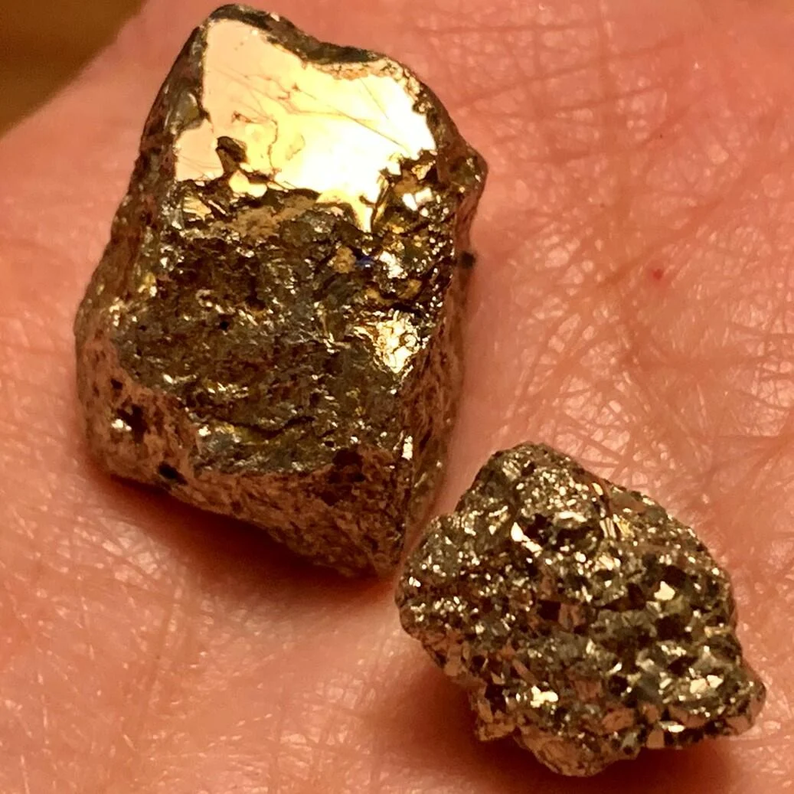

A bright fleck in a river can change a life. News of it can move thousands of people. But a glittering rock is not proof of gold—and a gold discovery is not a promise of wealth.
Your first move: Imagine someone offers you a shiny yellow rock. What evidence would you want before paying for it? Tell a partner before opening the mineral lab.
01 / Discovery → news → migration
Gold rushes crossed oceans
A gold rush is a rapid movement of people toward a reported gold discovery. Some become miners; others sell transport, food, tools, or services. News, hope, and competition can move people faster than reliable information.
California · 1848–1849
James Marshall found gold at Sutter’s sawmill on the American River on January 24, 1848. Nearby residents rushed first; the large 1849 migration gave the “forty-niners” their name. Travelers followed overland trails or sea routes. Disease, difficult terrain, and scarce supplies made reaching the fields a serious challenge.
Rushes began in New South Wales and Victoria, especially Ophir, Ballarat, and Bendigo. These were British colonies, before Australian federation. Edward Hargraves had tried California; after returning, he worked with John Lister and William and James Tom near Ophir. Gold had been found earlier: the celebrated discovery story should not erase other finders.
Select a stop. Ask: is this a discovery, a migration, or a political consequence?
Compare: What did California and Australia share? How might an ocean voyage change the cost of joining a rush? Migration brought families and people from many countries, not just lone American prospectors.
02 / Evidence beats appearance
Gold is an element. Pyrite is a compound.
Au · Gold
Gold’s symbol is Au, from Latin aurum; its atomic number is 79. Native gold occurs naturally as metallic gold, often mixed with silver. Pure gold is dense (about 19.3 g/cm³), soft, and malleable: it changes shape rather than shattering. Its durability, workability, and scarcity helped make it prized for jewelry and money.
Pyrite contains iron and sulfur. Its brassy shine earned it the nickname fool’s gold. It can form sharply edged crystals and is brittle. Appearance alone is weak evidence: other minerals, including mica and chalcopyrite, can also look gold-like.
The nickname describes a mistaken identification, not a person’s intelligence. Careful observers test their first impressions.

Photograph · Pyrite specimens. Metallic shine can be persuasive, but it does not identify an element. Look for several independent clues before making a claim. Credit: U.S. Geological Survey · Public domain · Source and rights.
Mineral detective: identify an unknown
Predict: Both samples look yellow and metallic. Choose a sample, reveal evidence, then make a claim. These are idealized classroom specimens, not a test of an actual rock.
No test results yet. Shine alone is insufficient.
Gold tends to indent under a metal point and leave a yellow streak; pyrite tends to crumble and leave a dark streak. Shape is supporting evidence, not a guarantee. Some pyrite can contain tiny amounts of gold; that does not make a pyrite crystal a gold nugget. USGS: distinguishing look-alikes · USGS: gold within pyrite.
Use the virtual tests here. If a teacher supplies real specimens, use supervised handling; do not crush or chemically treat unknown rocks.
03 / Geology meets engineering
Why does a gold pan work?
Gold-bearing rock weathers. Streams transport the released grains, and dense gold can accumulate in gravel as a placer deposit. Panning washes away lighter sediment while trying to retain dense particles. A sluice directs water over ridges called riffles. Hard-rock mining instead extracts gold-bearing rock that must be processed.
Equal-volume comparison
Predict which material has more mass for the same volume. Change the volume and compare. This is a mass model, not a fluid simulation.
Explain: Mass = density × volume. The ratio stays the same as volume changes. Real panning also depends on grain size, shape, water flow, and technique; density alone cannot predict every particle’s motion or identify gold.
Scale changes the landscape
Hydraulic mining used high-pressure water to break apart gold-bearing deposits. It moved much more sediment than a hand pan, damaging land and sending debris downstream. More production can shift costs onto people who never chose to mine.
Sketch a sluice with a water inlet, riffles, a collection zone, and a sediment outlet. Annotate what each part does. Then name one failure: too much flow may carry useful grains away; too little may clog the channel. How would you test your design without using gold?
04 / Finding gold ≠ making a profit
Who can afford the gamble?
A large discovery makes a dramatic story. It tells us little about the many people who found small amounts or nothing. Revenue is money received; profit subtracts costs. Merchants also faced risk: rent, stock, competition, and a departing population.
Goldfield budget lab
All numbers are invented classroom credits, not historical prices or probabilities. Everyone pays 120 for travel and equipment plus 80 for living costs. A successful strike brings 600; otherwise revenue is zero.
Discuss: At what assumed probability does expected profit become positive? Could a person still lose everything? Who would find the 200-credit entry cost hardest to pay?
05 / Opportunity, exclusion, and Country
A rush has more than one story
Native California
Miners entered inhabited homelands, competing for food, water, and land. Native communities faced dispossession, starvation, and violence, including killings. Calling this only an adventure erases those consequences.
Goldfields were on Aboriginal Country. Aboriginal people contributed as guides, suppliers, and interpreters, while the rush intensified pressures on land and resources. Their expertise belongs in the story alongside miners’ tools.
Chinese miners helped build goldfield communities in both countries but faced discrimination. California’s foreign miners’ taxes burdened migrant miners. Who could participate depended on laws and prejudice as well as effort.
Conflict over mining licences, policing, and representation culminated in the Eureka Stockade. Soldiers and police attacked the stockade on December 3. Its legacy helped debates over political rights, but rights were not extended equally to everyone.
Open the 1854 mining licence issued to J Hedger. Identify the issuer, date, purpose, and obligation it records. What can this document tell you about government power? What can it not tell you about Aboriginal experience, a miner’s earnings, or women’s work?
Make your case
Core: Compare California and Australia using a date, a migration pattern, and one consequence for each.
Investigator: Identify a virtual specimen using two test results. Explain why a shiny surface is insufficient.
Stretch: Write a museum label answering “Was the gold rush a success?” Name whose perspective you use, include evidence, and show a cost beyond the miner’s budget.
Teacher notes, pacing, and answers
Allow 10 minutes for history, 10 for mineral tests, 10 for density and budgets, and 15–20 for sources and discussion. Younger learners can compare two dates and sort observation from inference; older learners can critique expected value and source coverage.
A is gold-like (irregular, dents, yellow streak); B is pyrite-like (angular crystal, crumbles, dark streak). Two independent test results support a stronger claim, but this exercise is not a laboratory assay. Expected miner profit = 600p − 200, with p written as a fraction. Break-even is p = 1/3; the first positive setting on the slider is 35%. Even positive expected profit permits individual loss. The shop example has 300 revenue − 240 costs = 60 profit under the stated assumptions, not guaranteed historical success.
Assess accurate sequence, at least two independent clues, correct subtraction of costs, and attention to affected communities. Avoid “empty land” language or treating a single finder as the sole cause of a rush.